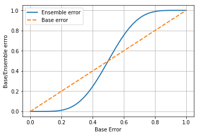
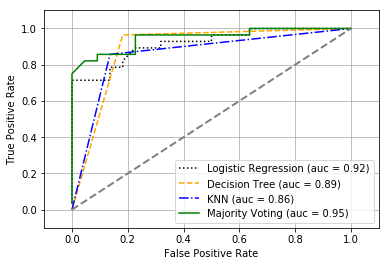
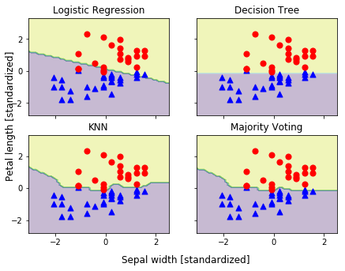
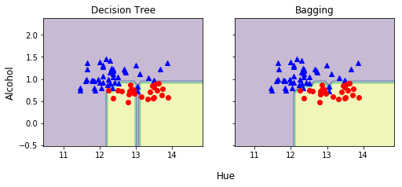
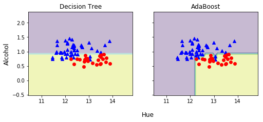

アンサンブル学習 - 異なるモデルの組み合わせ¶
7.1 アンサンブルによる学習¶
- アンサンブル法 (ensemble method)
- 複数の異なる分類器を 1 つのメタ分類器として組み合わせる
- アンサンブル法: 多数決 (二値), 相対多数決 (多値)
- 予測されるクラスラベル: \(\hat{y} = mode\{C_1(x),...,C_m(x)\}\)
- アンサンブル学習の誤分類率 \(P = \epsilon_{ensemble}\):
- \(n\) 個のベース分類器の誤分類率 \(\epsilon\)
- ベース分類器は独立
- \(k \gt \frac{n}{2}\)
- \(P(y \ge k) = {\sum^n_k}{{}_nC_k}\epsilon^k(1-\epsilon)^{n-k} = \epsilon_{ensemble}\)
In [1]:
from scipy.misc import comb
import math
def ensemble_error(n_classifier, error):
k_start = int(math.ceil(n_classifier / 2.0)) # k
probs = [
comb(n_classifier, k) *
(error ** k) *
((1 - error) ** (n_classifier - k))
for k in range(k_start, n_classifier + 1)
]
return sum(probs)
In [2]:
ensemble_error(n_classifier=11, error=0.25)
Out[2]:
0.034327507019042969
In [3]:
import numpy
from matplotlib import pyplot
error_range = numpy.arange(0.0, 1.01, 0.01)
ens_errors = [
ensemble_error(
n_classifier=11,
error=error,
)
for error in error_range
]
pyplot.plot(
error_range,
ens_errors,
label='Ensemble error',
linewidth=2
)
pyplot.plot(
error_range,
error_range,
linestyle='--',
label='Base error',
linewidth=2,
)
pyplot.xlabel('Base Error')
pyplot.ylabel('Base/Ensemble errro')
pyplot.legend(loc='upper left')
pyplot.grid()
pyplot.show()

7.2 単純な多数決分類器の実装¶
- ベース分類器: \(C_j\)
- \(C_j\) の重み: \(w_j\)
- クラスラベル: \(i \in A\)
- \(C_j(x) = i\) の特性関数 (Indicator function(*)): \({\chi}_A(C_j(x) = i) \rightarrow \{1, 0\}\)
- 重み付きの多数決: \(\hat{y} = \arg\max_i\sum^m_{j=1}w_j{\chi_A}(C_j(x) = i)\)
- ベース分類器が \(x\) が \(i\) に属すると予測した時のみ特性関数が 1 を返し、それ以外で 0 となる
- したがって、 \(i\) に属すると判断したベース分類器の重みの和が最大となる \(i\) が多数決の結果となる
(*) 西尾泰和氏のアドバイスによる
In [4]:
import numpy
numpy.argmax(
numpy.bincount(
[0, 0, 1],
weights=[0.2, 0.2, 0.6]
)
)
Out[4]:
1
In [5]:
numpy.bincount(
[0, 0, 1],
weights=[0.2, 0.2, 0.6]
)
Out[5]:
array([ 0.4, 0.6])
- クラスラベルをベース分類器が返す分類の確率から予測する場合
- 予測されるラベル: \(\hat{y} = \arg \max_i\sum^m_{j=1}w_jp_{ij}\)
In [6]:
ex = numpy.array([
[0.9, 0.1],
[0.8, 0.2],
[0.4, 0.6],
])
p = numpy.average(ex, axis=0, weights=[0.2, 0.2, 0.6])
p
Out[6]:
array([ 0.58, 0.42])
In [7]:
(0.9 * 0.2) + (0.8 * 0.2) + (0.4 * 0.6)
Out[7]:
0.5800000000000001
In [8]:
numpy.argmax(p)
Out[8]:
0
In [9]:
from sklearn.base import BaseEstimator, ClassifierMixin
from sklearn.preprocessing import LabelEncoder
from sklearn.externals import six
from sklearn.base import clone
from sklearn.pipeline import _name_estimators
import operator
class MajorityVoteClassifier(BaseEstimator, ClassifierMixin):
""" Majority voting ruel ensemble classifier """
def __init__(self, classifiers, vote='classlabel', weights=None):
self.classifiers = classifiers
self.named_classifiers = dict(_name_estimators(classifiers))
self.vote = vote
self.weights = weights
def fit(self, X, y):
self.labelenc_ = LabelEncoder()
self.labelenc_.fit(y)
self.classes_ = self.labelenc_.classes_
self.classifiers_ = []
for clf in self.classifiers:
fitted_clf = clone(clf).fit(X, self.labelenc_.transform(y))
self.classifiers_.append(fitted_clf)
return self
def predict(self, X):
if self.vote == 'probability':
maj_vote = numpy.argmax(self.predict_proba(X), axis=1)
else: # 'classlabel'
predictions = numpy.asarray([
clf.predict(X) for clf in self.classifiers_
]).T
maj_vote = numpy.apply_along_axis(
lambda x: numpy.argmax(numpy.bincount(x, weights=self.weights)),
axis=1,
arr=predictions,
)
return self.labelenc_.inverse_transform(maj_vote)
def predict_proba(self, X):
probas = numpy.asarray([
clf.predict_proba(X) for clf in self.classifiers_
])
return numpy.average(probas, axis=0, weights=self.weights)
def get_params(self, deep=True):
if not deep:
return super(MajorityVoteClassifier, self).get_params(deep=False)
else:
out = self.named_classifiers.copy()
for name, step in six.iteritems(self.named_classifiers):
for key, value in six.iteritems(step.get_params(deep=True)):
out['%s__%s' % (name, key)] = value
return out
7.2.1 多数決方式の分類アルゴリズムを組み合わせる¶
In [10]:
from sklearn import datasets
from sklearn.model_selection import train_test_split
from sklearn.preprocessing import (
StandardScaler,
LabelEncoder,
)
iris = datasets.load_iris()
X, y = iris.data[50:, [1, 2]], iris.target[50:]
le = LabelEncoder()
y = le.fit_transform(y)
In [11]:
X_train, X_test, y_train, y_test = train_test_split(
X, y, test_size=0.5, random_state=1
)
In [12]:
from sklearn.model_selection import cross_val_score
from sklearn.linear_model import LogisticRegression
from sklearn.tree import DecisionTreeClassifier
from sklearn.neighbors import KNeighborsClassifier
from sklearn.pipeline import Pipeline
clf1 = LogisticRegression(penalty='l2', C=0.001, random_state=0)
clf2 = DecisionTreeClassifier(max_depth=1, criterion='entropy', random_state=0)
clf3 = KNeighborsClassifier(n_neighbors=1, p=2, metric='minkowski')
pipe1 = Pipeline([
('sc', StandardScaler()),
('clf', clf1),
])
pipe3 = Pipeline([
('sc', StandardScaler()),
('clf', clf3),
])
mv_clf = MajorityVoteClassifier(classifiers=[pipe1, clf2, pipe3])
clf_labels = [
'Logistic Regression',
'Decision Tree',
'KNN',
'Majority Voting',
]
all_clf = [pipe1, clf2, pipe3, mv_clf]
print('10-fold cross validation:\n')
for clf, label in zip(all_clf, clf_labels):
scores = cross_val_score(
estimator=clf,
X=X_train,
y=y_train,
cv=10,
scoring='roc_auc',
)
print("ROC AUC: %0.2f (+/- %0.2f) [%s]" % (scores.mean(), scores.std(), label))
10-fold cross validation:
ROC AUC: 0.92 (+/- 0.20) [Logistic Regression]
ROC AUC: 0.92 (+/- 0.15) [Decision Tree]
ROC AUC: 0.93 (+/- 0.10) [KNN]
ROC AUC: 0.97 (+/- 0.10) [Majority Voting]
7.3 アンサンブル分類器の評価とチューニング¶
In [13]:
from sklearn.metrics import roc_curve, auc
colors = ['black', 'orange', 'blue', 'green']
linestyles = [':', '--', '-.', '-']
for clf, label, clr, ls in zip(all_clf, clf_labels, colors, linestyles):
y_pred = clf.fit(X_train, y_train).predict_proba(X_test)[:, 1]
fpr, tpr, thresholds = roc_curve(y_true=y_test, y_score=y_pred)
roc_auc = auc(x=fpr, y=tpr)
pyplot.plot(
fpr,
tpr,
color=clr,
linestyle=ls,
label='%s (auc = %0.2f)' % (label, roc_auc)
)
pyplot.legend(loc='lower right')
pyplot.plot(
[0, 1],
[0, 1],
linestyle='--',
color='gray',
linewidth=2,
)
pyplot.xlim([-0.1, 1.1])
pyplot.ylim([-0.1, 1.1])
pyplot.grid()
pyplot.xlabel('False Positive Rate')
pyplot.ylabel('True Positive Rate')
pyplot.show()

In [14]:
from itertools import product
sc = StandardScaler()
X_train_std = sc.fit_transform(X_train)
x_min = X_train_std[:, 0].min() - 1
x_max = X_train_std[:, 0].max() + 1
y_min = X_train_std[:, 1].min() - 1
y_max = X_train_std[:, 1].max() + 1
xx, yy = numpy.meshgrid(
numpy.arange(x_min, x_max, 0.1),
numpy.arange(y_min, y_max, 0.1),
)
f, axarr = pyplot.subplots(
nrows=2,
ncols=2,
sharex='col',
sharey='row',
figsize=(7, 5),
)
for idx, clf, tt in zip(product([0, 1], [0, 1]), all_clf, clf_labels):
clf.fit(X_train_std, y_train)
Z = clf.predict(numpy.c_[xx.ravel(), yy.ravel()])
Z = Z.reshape(xx.shape)
axarr[idx[0], idx[1]].contourf(xx, yy, Z, alpha=0.3)
axarr[idx[0], idx[1]].scatter(
X_train_std[y_train==0, 0],
X_train_std[y_train==0, 1],
c='blue',
marker='^',
s=50,
)
axarr[idx[0], idx[1]].scatter(
X_train_std[y_train==1, 0],
X_train_std[y_train==1, 1],
c='red',
marker='o',
s=50,
)
axarr[idx[0], idx[1]].set_title(tt)
pyplot.text(
-3.5,
-4.5,
s='Sepal width [standardized]',
ha='center',
va='center',
fontsize=12
)
pyplot.text(
-10.5,
4.5,
s='Petal length [standardized]',
ha='center',
va='center',
fontsize=12,
rotation=90,
)
pyplot.show()

In [15]:
mv_clf.get_params()
Out[15]:
{'decisiontreeclassifier': DecisionTreeClassifier(class_weight=None, criterion='entropy', max_depth=1,
max_features=None, max_leaf_nodes=None,
min_impurity_split=1e-07, min_samples_leaf=1,
min_samples_split=2, min_weight_fraction_leaf=0.0,
presort=False, random_state=0, splitter='best'),
'decisiontreeclassifier__class_weight': None,
'decisiontreeclassifier__criterion': 'entropy',
'decisiontreeclassifier__max_depth': 1,
'decisiontreeclassifier__max_features': None,
'decisiontreeclassifier__max_leaf_nodes': None,
'decisiontreeclassifier__min_impurity_split': 1e-07,
'decisiontreeclassifier__min_samples_leaf': 1,
'decisiontreeclassifier__min_samples_split': 2,
'decisiontreeclassifier__min_weight_fraction_leaf': 0.0,
'decisiontreeclassifier__presort': False,
'decisiontreeclassifier__random_state': 0,
'decisiontreeclassifier__splitter': 'best',
'pipeline-1': Pipeline(steps=[('sc', StandardScaler(copy=True, with_mean=True, with_std=True)), ('clf', LogisticRegression(C=0.001, class_weight=None, dual=False, fit_intercept=True,
intercept_scaling=1, max_iter=100, multi_class='ovr', n_jobs=1,
penalty='l2', random_state=0, solver='liblinear', tol=0.0001,
verbose=0, warm_start=False))]),
'pipeline-1__clf': LogisticRegression(C=0.001, class_weight=None, dual=False, fit_intercept=True,
intercept_scaling=1, max_iter=100, multi_class='ovr', n_jobs=1,
penalty='l2', random_state=0, solver='liblinear', tol=0.0001,
verbose=0, warm_start=False),
'pipeline-1__clf__C': 0.001,
'pipeline-1__clf__class_weight': None,
'pipeline-1__clf__dual': False,
'pipeline-1__clf__fit_intercept': True,
'pipeline-1__clf__intercept_scaling': 1,
'pipeline-1__clf__max_iter': 100,
'pipeline-1__clf__multi_class': 'ovr',
'pipeline-1__clf__n_jobs': 1,
'pipeline-1__clf__penalty': 'l2',
'pipeline-1__clf__random_state': 0,
'pipeline-1__clf__solver': 'liblinear',
'pipeline-1__clf__tol': 0.0001,
'pipeline-1__clf__verbose': 0,
'pipeline-1__clf__warm_start': False,
'pipeline-1__sc': StandardScaler(copy=True, with_mean=True, with_std=True),
'pipeline-1__sc__copy': True,
'pipeline-1__sc__with_mean': True,
'pipeline-1__sc__with_std': True,
'pipeline-1__steps': [('sc',
StandardScaler(copy=True, with_mean=True, with_std=True)),
('clf',
LogisticRegression(C=0.001, class_weight=None, dual=False, fit_intercept=True,
intercept_scaling=1, max_iter=100, multi_class='ovr', n_jobs=1,
penalty='l2', random_state=0, solver='liblinear', tol=0.0001,
verbose=0, warm_start=False))],
'pipeline-2': Pipeline(steps=[('sc', StandardScaler(copy=True, with_mean=True, with_std=True)), ('clf', KNeighborsClassifier(algorithm='auto', leaf_size=30, metric='minkowski',
metric_params=None, n_jobs=1, n_neighbors=1, p=2,
weights='uniform'))]),
'pipeline-2__clf': KNeighborsClassifier(algorithm='auto', leaf_size=30, metric='minkowski',
metric_params=None, n_jobs=1, n_neighbors=1, p=2,
weights='uniform'),
'pipeline-2__clf__algorithm': 'auto',
'pipeline-2__clf__leaf_size': 30,
'pipeline-2__clf__metric': 'minkowski',
'pipeline-2__clf__metric_params': None,
'pipeline-2__clf__n_jobs': 1,
'pipeline-2__clf__n_neighbors': 1,
'pipeline-2__clf__p': 2,
'pipeline-2__clf__weights': 'uniform',
'pipeline-2__sc': StandardScaler(copy=True, with_mean=True, with_std=True),
'pipeline-2__sc__copy': True,
'pipeline-2__sc__with_mean': True,
'pipeline-2__sc__with_std': True,
'pipeline-2__steps': [('sc',
StandardScaler(copy=True, with_mean=True, with_std=True)),
('clf',
KNeighborsClassifier(algorithm='auto', leaf_size=30, metric='minkowski',
metric_params=None, n_jobs=1, n_neighbors=1, p=2,
weights='uniform'))]}
In [16]:
from sklearn.model_selection import GridSearchCV
params = {
'decisiontreeclassifier__max_depth': [1, 2],
'pipeline-1__clf__C': [0.001, 0.1, 100]
}
grid = GridSearchCV(
estimator=mv_clf,
param_grid=params,
cv=10,
scoring='roc_auc'
)
In [17]:
grid.fit(X_train, y_train)
for params, mean_score, scores in grid.grid_scores_:
print("%0.3f+/-%0.2f %r" % (mean_score, scores.std() / 2, params))
print('Best parameters: %s' % grid.best_params_)
print('Accuracy: %.2f' % grid.best_score_)
0.967+/-0.05 {'decisiontreeclassifier__max_depth': 1, 'pipeline-1__clf__C': 0.001}
0.967+/-0.05 {'decisiontreeclassifier__max_depth': 1, 'pipeline-1__clf__C': 0.1}
1.000+/-0.00 {'decisiontreeclassifier__max_depth': 1, 'pipeline-1__clf__C': 100}
0.967+/-0.05 {'decisiontreeclassifier__max_depth': 2, 'pipeline-1__clf__C': 0.001}
0.967+/-0.05 {'decisiontreeclassifier__max_depth': 2, 'pipeline-1__clf__C': 0.1}
1.000+/-0.00 {'decisiontreeclassifier__max_depth': 2, 'pipeline-1__clf__C': 100}
Best parameters: {'decisiontreeclassifier__max_depth': 1, 'pipeline-1__clf__C': 100}
Accuracy: 1.00
/path/to/site-packages/sklearn/model_selection/_search.py:667: DeprecationWarning: The grid_scores_ attribute was deprecated in version 0.18 in favor of the more elaborate cv_results_ attribute. The grid_scores_ attribute will not be available from 0.20
DeprecationWarning)
In [18]:
import pandas
df_wine = pandas.read_csv(
'https://archive.ics.uci.edu/ml/machine-learning-databases/wine/wine.data',
header=None)
df_wine.columns = [
'Class label',
'Alcohol',
'Malic acid',
'Ash',
'Alcalinity of ash',
'Magnesium',
'Total phenols',
'Flavanoids',
'Nonflavanoid phenols',
'Proanthocyanins',
'Color intensity',
'Hue',
'OD280/OD315 of diluted wines',
'Proline'
]
df_wine = df_wine[df_wine['Class label'] != 1]
y = df_wine['Class label'].values
X = df_wine[['Alcohol', 'Hue']].values
In [19]:
from sklearn.preprocessing import LabelEncoder
from sklearn.model_selection import train_test_split
le = LabelEncoder()
y = le.fit_transform(y)
X_train, X_test, y_train, y_test = train_test_split(
X, y, test_size=0.40, random_state=1)
In [20]:
from sklearn.ensemble import BaggingClassifier
tree = DecisionTreeClassifier(
criterion='entropy',
max_depth=None,
random_state=1
)
bag = BaggingClassifier(
base_estimator=tree,
n_estimators=500,
max_samples=1.0,
max_features=1.0,
bootstrap=True,
bootstrap_features=False,
n_jobs=1,
random_state=1,
)
In [21]:
from sklearn.metrics import accuracy_score
tree = tree.fit(X_train, y_train)
y_train_pred = tree.predict(X_train)
y_test_pred = tree.predict(X_test)
tree_train = accuracy_score(y_train, y_train_pred)
tree_test = accuracy_score(y_test, y_test_pred)
print('Decision tree train/test accuracies %.3f/%.3f' % (tree_train, tree_test))
Decision tree train/test accuracies 1.000/0.833
In [22]:
bag = bag.fit(X_train, y_train)
y_train_pred = bag.predict(X_train)
y_test_pred = bag.predict(X_test)
bag_train = accuracy_score(y_train, y_train_pred)
bag_test = accuracy_score(y_test, y_test_pred)
print('Bagging train/test accuracies %.3f/%.3f' % (bag_train, bag_test))
Bagging train/test accuracies 1.000/0.896
In [23]:
x_min = X_train[:, 0].min() - 1
x_max = X_train[:, 0].max() + 1
y_min = X_train[:, 1].min() - 1
y_max = X_train[:, 1].max() + 1
xx, yy = numpy.meshgrid(
numpy.arange(x_min, x_max, 0.1),
numpy.arange(y_min, y_max, 0.1),
)
f, axarr = pyplot.subplots(
nrows=1,
ncols=2,
sharex='col',
sharey='row',
figsize=(8, 3),
)
for idx, clf, tt in zip([0, 1], [tree, bag], ['Decision Tree', 'Bagging']):
clf.fit(X_train, y_train)
Z = clf.predict(numpy.c_[xx.ravel(), yy.ravel()])
Z = Z.reshape(xx.shape)
axarr[idx].contourf(xx, yy, Z, alpha=0.3)
axarr[idx].scatter(
X_train[y_train==0, 0],
X_train[y_train==0, 1],
c='blue',
marker='^',
)
axarr[idx].scatter(
X_train[y_train==1, 0],
X_train[y_train==1, 1],
c='red',
marker='o',
)
axarr[idx].set_title(tt)
axarr[0].set_ylabel('Alcohol', fontsize=12)
pyplot.text(
10.2, -1.2,
s='Hue',
ha='center', va='center', fontsize=12)
pyplot.show()

7.5 アダブーストによる弱学習器の活用¶
- ブースティング
- 弱学習器 (weak learner): 当て推量をわずかに上回るくらいの単純なベース分類器
- データセット \(D\) からサブセット \(d_1\) を無作為に非復元抽出し、弱学習器 \(C_1\) をトレーニングする
- データセット \(D\) からサブセット \(d_2\) を無作為に非復元抽出し、誤分類されたサンプルの 50% と合わせて、弱学習器 \(C_2\) をトレーニングする
- \(C_1\) と \(C_2\) が異なる出力したサンプルを \(D\) から抽出し、弱学習器 \(C_3\) をトレーニングする
- \(C_1\), \(C_2\), \(C_3\) を多数決で組み合わせる
In [28]:
tree = DecisionTreeClassifier(
criterion='entropy',
max_depth=1,
random_state=0,
)
tree = tree.fit(X_train, y_train)
y_train_pred = tree.predict(X_train)
y_test_pred = tree.predict(X_test)
tree_train = accuracy_score(y_train, y_train_pred)
tree_test = accuracy_score(y_test, y_test_pred)
print('Decision tree train/test accuracies %.3f/%.3f' % (tree_train, tree_test))
Decision tree train/test accuracies 0.845/0.854
In [31]:
from sklearn.ensemble import AdaBoostClassifier
ada = AdaBoostClassifier(
base_estimator=tree,
n_estimators=500,
learning_rate=0.1,
random_state=0,
)
ada = ada.fit(X_train, y_train)
y_train_pred = ada.predict(X_train)
y_test_pred = ada.predict(X_test)
ada_train = accuracy_score(y_train, y_train_pred)
ada_test = accuracy_score(y_test, y_test_pred)
print('AdaBoost train/test accuracies %.3f/%.3f' % (ada_train, ada_test))
AdaBoost train/test accuracies 1.000/0.875
In [34]:
x_min = X_train[:, 0].min() - 1
x_max = X_train[:, 0].max() + 1
y_min = X_train[:, 1].min() - 1
y_max = X_train[:, 1].max() + 1
xx, yy = numpy.meshgrid(
numpy.arange(x_min, x_max, 0.1),
numpy.arange(y_min, y_max, 0.1),
)
f, axarr = pyplot.subplots(
1, 2,
sharex='col',
sharey='row',
figsize=(8, 3),
)
for idx, clf, tt, in zip([0, 1], [tree, ada], ['Decision Tree', 'AdaBoost']):
clf.fit(X_train, y_train)
Z = clf.predict(numpy.c_[xx.ravel(), yy.ravel()])
Z = Z.reshape(xx.shape)
axarr[idx].contourf(xx, yy, Z, alpha=0.3)
axarr[idx].scatter(
X_train[y_train==0, 0],
X_train[y_train==0, 1],
c='blue',
marker='^',
)
axarr[idx].scatter(
X_train[y_train==1, 0],
X_train[y_train==1, 1],
c='red',
marker='o',
)
axarr[idx].set_title(tt)
axarr[0].set_ylabel('Alcohol', fontsize=12)
pyplot.text(
10.2,
-1.2,
s='Hue',
ha='center',
va='center',
fontsize=12,
)
pyplot.show()
